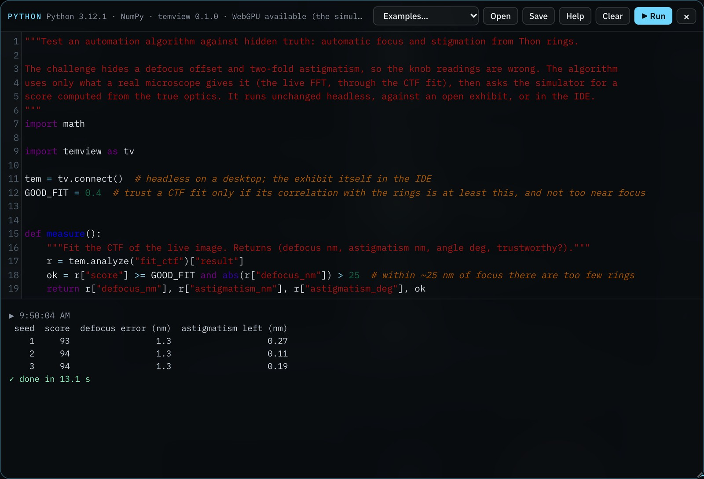
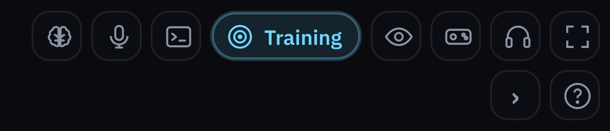
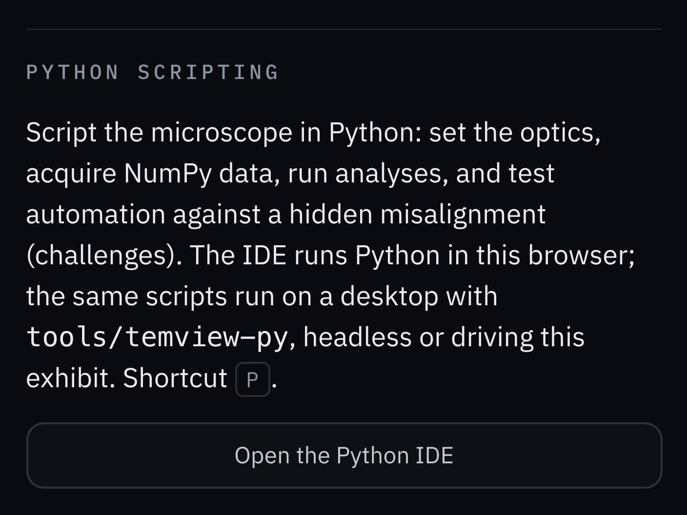
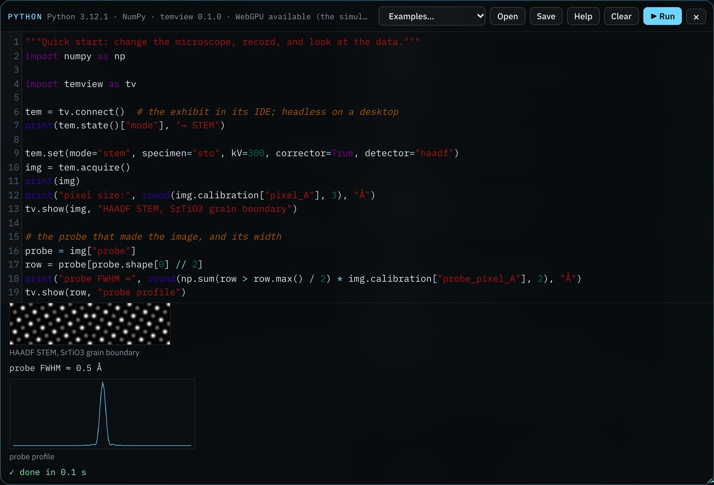

Script the TEM-view microscope from Python: in the exhibit's IDE, headless on a desktop, or driving an open exhibit. Record NumPy data, run analyses, and test automation algorithms against a hidden misalignment.

The temview Python package controls the simulated microscope: it changes settings, records detector data as NumPy arrays with calibrations, runs analyses that report the simulator's true values, and sets hidden misalignments (challenges) that score an algorithm against the truth. The same script runs in three places.
| Where | Open with | Needs | Best for |
|---|---|---|---|
| Python IDE in the exhibit | tv.connect() | A browser; Python runs in it (Pyodide) | Teaching, quick experiments, watching the exhibit respond |
| Desktop, headless | tv.connect() or tv.connect("headless") | Python 3.9+, NumPy, Node.js 20+ | Long runs, batch data, algorithm benchmarks, CI tests |
| Desktop, live | tv.connect("live") | The above, websockets, an open exhibit | Desktop tools driving the exhibit on screen |
| 1 | Run a first script in the exhibit's IDE |
| 2 | Install the package on a desktop |
| 3 | Learn the calls |
| 4 | Test an automation algorithm with challenges |
| 5 | Batch data and regression tests |
A challenge is a training task's hidden misalignment, set up for a script instead of a person. The knob is the setting a script reads and changes; the truth is the optics the simulator actually applies. During a challenge the two differ by the hidden amount, as on a misaligned instrument.
score() and reveal() only after the algorithm has finished..py file; Open loads one. Help lists the calls.Result. The script changes the exhibit, and its output appears below the editor.
import temview as tv
tem = tv.connect()
tem.set(mode="stem", specimen="sto", kV=300, corrector=True, detector="haadf")
img = tem.acquire()
print(img, img.calibration)
tv.show(img, "HAADF, SrTiO3")


The headless backend runs the simulator's own JavaScript in Node.js, so the package is installed from a copy of the repository and stays linked to it.
git clone https://github.com/Advanced-EM/TEM-view
python -m venv .venv && source .venv/bin/activate # Windows: .venv\Scripts\activate
pip install -e "TEM-view/tools/temview-py[live,plot,test]"
pytest TEM-view/tools/temview-py/tests # all tests should pass
python TEM-view/tools/temview-py/examples/quickstart.pynode --version must report 20 or later.tem = tv.connect() starts the simulator in a background Node process. It stops when the script ends, or with tem.close().with tv.connect() as tem: …Result. tem.info()["backend"] is "headless", and a typical acquisition returns in a fraction of a second.
TEMVIEW_ROOT to its folder.tv.connect("live") prints that it is waiting for the exhibit.tem = tv.connect("live", port=8790, timeout=120)Result. The script prints “Exhibit connected.”, and the exhibit shows Agent connected.
Every call is the same on the three backends. tem is the object tv.connect() returns.
| Call | Returns, or does |
|---|---|
tem.set(**settings) | Changes settings (next page); returns what was done |
tem.state() | Settings and optics: Cs, aberrations, wavelength, Scherzer defocus, temperature |
tem.command(text) | Runs a plain-language command: "defocus minus 50" |
tem.aberrations(A1=(nm, deg), …) | Sets A1, B2, A2 (nm) and A3 (µm) as (magnitude, angle); Cs_um with the corrector on |
tem.acquire(steps=None) | An Acquisition (below), after advancing the simulation so it reflects the settings |
tem.analyze(name) | fit_ctf, fit_lattice, identify_edges, fit_eds, fit_zlp, fit_hologram; the summary includes the true values |
tem.step(n) | Advances n frames of 50 ms: drift, dose and temperature evolve |
tem.info() | Modes, specimens, settings, analyses and challenges available |
tem.challenge(id, seed) | Starts tem-focus-stig or corrector-ronch |
tem.score() · tem.reveal() | The challenge's score from the true optics · the hidden values |
tem.end_challenge() | Restores the instrument as it was |
tv.show(x, title) | Draws a 2D image or a 1D profile (IDE output, or matplotlib) |
| Name | Values |
|---|---|
mode | tem, stem, 4d, diff, cbed, eds, eels, ronch, oah, ilh |
specimen | au, si, sto, gr, mof, bio, lib (nanoparticle megalibrary), xyz (after load_xyz) |
kV | 80, 200, 300 |
defocus_nm | C1 in nm, negative is underfocus: ±150 without the corrector, ±300 with it, −4000 to +500 for the cryo specimen |
fov_nm | Field of view, 1.5 to 120 nm |
dose | Electrons per Ų |
thickness_nm | Specimen thickness |
corrector | True or False |
holder, temperature_K | room, ln2, lhe, heat; specimen temperature |
realistic | Shot noise and real detectors (True) or the clean view |
detector | bf, abf, adf, haadf (STEM) |
convergence_mrad | Probe semi-angle, 3 to 40 mrad |
camera_length_mm | Diffraction camera length, 80 to 6000 mm |
tilt_x_deg, tilt_y_deg | Specimen tilt, ±3° |
eels_range | zlp, low, core, high |
beam | True (on) or False (blanked) |
Settings apply in a fixed order whatever order you write them: specimen, mode, then the optics. Loading a specimen applies its usual conditions (for example, the cryo specimen sets 300 kV and a cryo holder), so set those values after it or in the same call.
TemviewError with the reason, for example unknown setting focus or a training task is running.a.image | The main array: image, pattern, spectrum, … |
a["probe"], a.arrays | Any array by name; all of them |
a.calibration | Pixel size, camera length, energy scale, as recorded |
a.meta | The full metadata, including the instrument state |
a.save("x.npz") | The same .npz file the exhibit's Export button writes |
a = tem.acquire()
a.image.shape # (224, 224)
a.calibration["pixel_A"] # Å per pixel
a.meta["optics"] # wavelength, Cs, focal spread
a.save("run.npz") # numpy.load() reads it backA challenge hides a misalignment, so the knob readings no longer show the true optics. The algorithm works only from what a real microscope gives it: images, FFTs and fits. Afterwards, score() grades the result against the truth. A fixed seed repeats the same misalignment, so algorithms are compared on the same cases.
tem.challenge("tem-focus-stig", seed=1).state() (the knobs), acquire, and analyze, but not score() or reveal().tem.score().tem.end_challenge() to restore the instrument.examples/auto_focus_stig.py corrects defocus and two-fold astigmatism from Thon rings only:
| Seed | Score | Defocus error | Astigmatism left |
|---|---|---|---|
| 1 | 93 | 1.3 nm | 0.27 nm |
| 2 | 94 | 1.3 nm | 0.11 nm |
| 3 | 94 | 1.3 nm | 0.19 nm |
| 4 | 94 | 1.3 nm | 0.17 nm |
| 5 | 94 | 1.3 nm | 0.09 nm |
| 6–8 | 93 | 1.3 nm | 0.28–0.40 nm |
Headless, 200 kV. The IDE gives the same scores for the same seeds.
Simulated data comes with exact ground truth, which makes it useful for training and testing analysis models. Run this headless:
import json, temview as tv
with tv.connect() as tem:
tem.set(mode="tem", specimen="au", corrector=False, fov_nm=20)
labels = []
for i, df in enumerate(range(-150, -19, 10)):
for a1 in (0, 5, 10, 20):
tem.set(defocus_nm=df)
tem.aberrations(A1=(a1, 30))
tem.acquire().save(f"ctf_{i:03d}_{a1:02d}.npz")
labels.append({"file": f"ctf_{i:03d}_{a1:02d}.npz",
"defocus_nm": df, "A1_nm": a1, "A1_deg": 30})
json.dump(labels, open("labels.json", "w"), indent=1)Each .npz carries the full instrument state in its metadata, so a label file is a convenience rather than the only record.
tem.state() and tem.info() with every result.realistic=True) when shot noise matters to the algorithm.git rev-parse HEAD); the simulator improves between versions.Put the benchmark in a test so that changes to the algorithm or the simulator cannot silently make it worse:
# tests/test_autofocus.py
import pytest, temview as tv
from my_autofocus import run
@pytest.fixture(scope="module")
def tem():
with tv.connect() as m:
yield m
@pytest.mark.parametrize("seed", range(1, 9))
def test_autofocus(tem, seed):
tem.challenge("tem-focus-stig", seed=seed)
run(tem)
assert tem.score()["score"] >= 85
tem.end_challenge()The TEM-view repository runs its own tests this way on every pull request (.github/workflows/tests.yml), with Node.js 20 and Python set up in the workflow.
examples/through_focus.py steps the defocus from −120 to +40 nm and tabulates image contrast. On gold at 200 kV, contrast peaks near −60 nm, close to the Scherzer defocus of −65.8 nm.A TEM or STEM acquisition takes tens of milliseconds, and a CTF fit about half a second. The simulator computes on the CPU in JavaScript. The calls do not depend on how it computes, so a future WebGPU backend could speed up the same scripts without changes; the IDE's status line shows whether the browser offers WebGPU.
| Observation | Likely cause | Action |
|---|---|---|
| The IDE says “Python could not load” | No network on first use, or the CDN is blocked | Connect once; later opens use the browser cache |
| The exhibit freezes while a script runs | Expected: IDE scripts run on the page's thread | Wait; move long loops to a desktop |
TemviewError: A training task is running | A person is doing a training task | Finish or give up the task first |
Node.js 20 or later is needed | Node is missing or old | Install Node.js 20+; check node --version |
TEM-view not found at … | The package is not linked to a copy of the repository | Install with pip install -e from a clone, or set TEMVIEW_ROOT |
port 8790 is in use | An AI client runs temview-mcp | Close it, or connect("live", port=8791) |
| No exhibit connected within the timeout | Connect agent not selected, or the exhibit joined another server | Select Connect agent again; close other temview servers |
| STEM images look blurred | The corrector is off with a wide probe | Set corrector=True, or convergence_mrad ≤ 10 without it |
| Results differ between runs | Unseeded challenge, drift, or realistic shot noise | Fix the seed; reduce step() calls; average or use the clean view |
| Item | Value or criterion | Initials | |
|---|---|---|---|
| IDE runs the Quick start example | Image and probe profile shown | ||
| Desktop package installed, tests pass | All passed | ||
| Live mode connects | “Exhibit connected.”; port ______ | ||
| Algorithm benchmarked on challenges | Seeds ______ ; mean score ______ | ||
| Repository commit and settings recorded | Commit ____________ |
The link opens TEM-view with the Python IDE and the Quick start example loaded. Select Run.
github.com/Advanced-EM/TEM-view
tools/temview-py
SOP-01 TEM and SOP-02 STEM alignment: the tasks the challenges come from. SOP-03: AI agents and MCP.
Python in the browser: pyodide.org